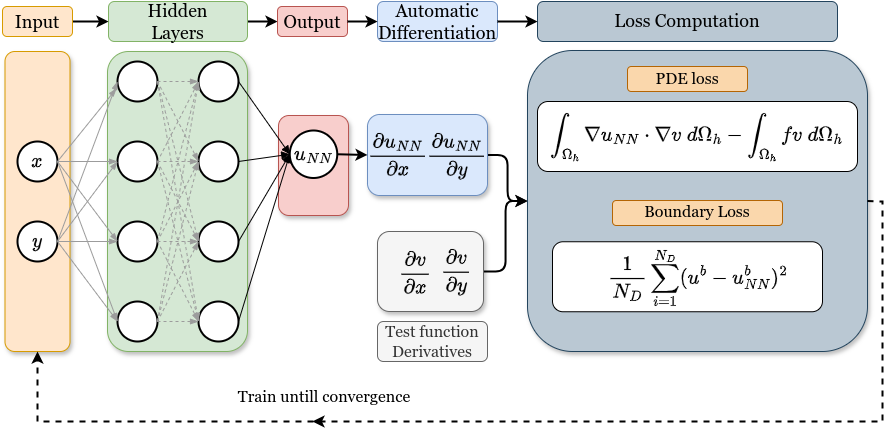

Welcome to FastVPINNs’s documentation!

FastVPINNs is a robust tensor-based framework for solving partial differential equations (PDEs) using hp-Variational Physics-Informed Neural Networks (hp-VPINNs). The FastVPINNs framework is written using Tensorflow 2.0. This framework is a highly optimized version of the initial implementation of hp-VPINNs by Kharazmi et al.. The framework uses a tensorized loss computation method to accelerate the training of hp-VPINNs by up to 100x for domains with a large number of elements. Furthermore, the library supports reading external meshes (in .mesh format), which helps in solving practical problems on real-world domains. The library provides high-level functional APIs to define the test functions and tensor assembly, allowing users to train an hp-VPINNs problem with fewer than 6 API calls.
The framework is based on the work by FastVPINNs Paper. hp-Variational PINNs were originally proposed in the hp-VPINNs Paper.
Statement of Need
The FastVPINNs Python package addresses two main challenges in existing hp-VPINNs implementations. Current hp-VPINNs implementations suffer from computational inefficiency, with training times scaling linearly as the number of elements within the domain increases. Additionally, the existing implementation cannot handle complex computational domains that consist of skewed quadrilateral elements.
FastVPINNs relies on two novel contributions to address these limitations. First, the variational loss required to train the network is calculated using tensor-based operations that reduce the dependency on the number of elements within the domain, thereby significantly accelerating training and achieving up to 100x speedup compared to traditional hp-VPINNs. Second, by incorporating bilinear transformations, it enables FastVPINNs to handle complex computational domains with skewed quadrilateral cells. In our experiments, FastVPINNs demonstrates superior performance in both forward and inverse problems, outperforming conventional PINNs and hp-VPINNs in speed and accuracy, especially for high-frequency solutions.
The enhancements provided by FastVPINNs, including faster training times and the ability to handle complex geometries, enable broader application of the hp-VPINNs framework to real-world problems in various scientific fields.
hp-Variational Physics-informed neural network
hp-Variational Physics-Informed neural networks are special form of physics informed neural networks, which uses variational form of the loss function to train the NN. A special form of hp-Variational PINNs which uses h- & p- refinement to enhance the ability of the NN to capture higher frequency solutions. For more details on the theory and implementation of hp-VPINNs, please refer to the FastVPINNs Paper and the hp-VPINNs Paper.
Usage
The package provides a simple API to train and solve PDE using VPINNs. The following code snippet demonstrates how to train a hp-VPINN model for the 2D Poisson equation for a structured grid using less than 6 API calls to the FastVPINNs library.
#load the geometry
domain = Geometry_2D("quadrilateral", "internal", 100, 100, "./")
cells, boundary_points = domain.generate_quad_mesh_internal(x_limits=[0, 1],y_limits=[0, 1],n_cells_x=4, n_cells_y=4, num_boundary_points=400)
# load the FEspace
fespace = Fespace2D(domain.mesh,cells,boundary_points,domain.mesh_type,fe_order=5,fe_type="jacobi",quad_order=5,quad_type="legendre", fe_transformation_type="bilinear",bound_function_dict=bound_function_dict,bound_condition_dict=bound_condition_dict,
forcing_function=rhs,output_path=i_output_path,generate_mesh_plot=True)
# Instantiate Data handler
datahandler = DataHandler2D(fespace, domain, dtype=tf.float32)
# Instantiate the model with the loss function for the model
model = DenseModel(layer_dims=[2, 30, 30, 30, 1],learning_rate_dict=0.01,params_dict=params_dict,
loss_function=pde_loss_poisson, ## Loss function of poisson2D
input_tensors_list=[in_tensor, dir_in, dir_out],
orig_factor_matrices=[datahandler.shape_val_mat_list,datahandler.grad_x_mat_list, datahandler.grad_y_mat_list],
force_function_list=datahandler.forcing_function_list, tensor_dtype=tf.float32,
use_attention=i_use_attention, ## Archived (not in use)
activation=i_activation,
hessian=False)
# Train the model
for epoch in range(1000):
model.train_step()
Getting Started
Example-Problems
Community